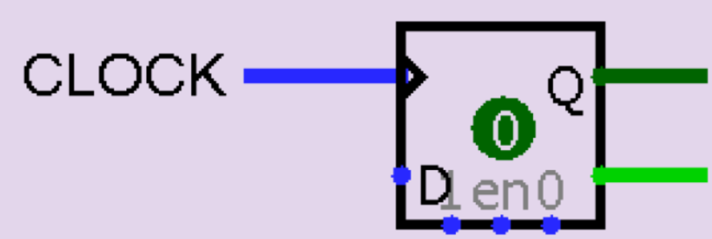
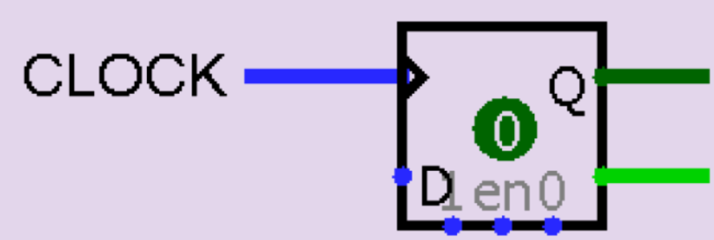

Un flip-flop es un circuito secuencial básico en electrónica digital que se utiliza como unidad básica de almacenamiento de información en sistemas digitales. Funcionan como interruptores electrónicos que pueden cambiar su estado de salida en función de una señal de entrada, y mantienen su estado de salida anterior en ausencia de una señal de entrada. En otras palabras, un flip-flop es un circuito secuencial que tiene como objetivo memorizar un dato binario.
Existen varios tipos de flip-flops, pero los más comunes son el flip-flop SR, el flip-flop D y el flip-flop JK.
El flip-flop SR (set-reset) es un circuito que tiene dos entradas, una entrada S (set) y una entrada R (reset) , y dos salidas, una salida Q y una salida Q complementaria. Cuando la entrada S es 1 y la entrada R es 0, la salida Q se establece en 1 y la salida Q complementaria se establece en 0. Por otro lado, cuando la entrada S es 0 y la entrada R es 1, la salida Q se establece en 0 y la salida Q complementaria se establece en 1. Cuando ambas entradas son 0, el estado anterior del flip-flop se mantiene.
El flip-flop D (data) es un circuito que tiene una entrada D (data), una entrada de reloj y dos salidas, una salida Q y una salida Q complementaria. Cuando la señal de reloj cambia de 0 a 1, el valor de la entrada D se carga en la salida Q. Cuando la señal de reloj cambia de 1 a 0, la salida Q se mantiene en el último valor que se cargó.

 

Los registros son circuitos digitales que se utilizan para almacenar temporalmente datos en sistemas electrónicos. Los registros se utilizan en una amplia gama de aplicaciones en sistemas digitales, como la memoria temporal en procesadores, la transmisión de datos en comunicaciones digitales, la generación de señales de temporización y la implementación de lógica secuencial.
Los registros SIPO, SISO, PISO y PIPO son componentes digitales que se utilizan para almacenar y desplazar datos en sistemas electrónicos. Cada uno de estos registros tiene una función específica para la entrada y salida de los datos en diferentes forma tos, lo que los hace útiles en una variedad de aplicaciones, como la comunicación de datos, la conversión de formatos de datos, la generación de secuencias de datos, entre otros.
SIPO (serial-in-parallel-out): este tipo de registro tiene una entrada en serie y varias salidas en paralelo. Los datos se cargan uno a uno en el registro a través de la entrada en serie y luego se pueden leer simultáneamente en las salidas en paralelo.
SISO (serial-in-serial-out): este tipo de registro tiene una entrada en serie y una salida en serie. Los datos se cargan uno a uno en el registro a través de la entrada en serie y luego se leen uno a uno a través de la salida en serie.
PISO (parallel-in-serial-out): este tipo de registro tiene varias entradas en paralelo y una salida en serie. Los datos se cargan simultáneamente en el registro a través de las entradas en paralelo y luego se leen uno a uno a través de la salida en serie.
PIPO (parallel-in-parallel-out): este tipo de registro tiene varias entradas en paralelo y varias salidas en paralelo. Los datos se cargan simultáneamente en el registro a través de las entradas en paralelo y luego se pueden leer simultáneamente en las salidas en paralelo.